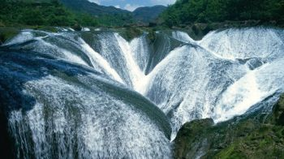
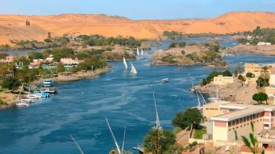
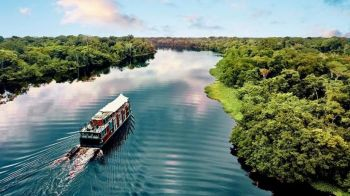
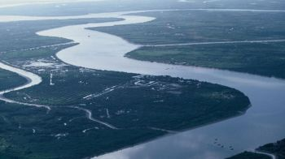

Quinta Prova
Indica quale tra questi fiumi é il più lungo!
inserisci il nome nella casella sottostante
|  |  |
|
Fiume Azzurro |
Fiume Nilo |
|  |  |
|
Rio delle Amazzoni |
Fiume Missisipi |
"Presentazione del fiume"
Il Rio delle Amazzoni è il fiume più grande del mondo che nasce sulle montagne delle Ande e sfocia nell’Oceano Atlantico. Il fiume attraversa gli stati di Guyana, Ecuador, Venezuela, Bolivia, Brasile, Colombia e Perù, arrivando ad attraversare circa il 30% delle terre del sud America. La lunghezza del fiume è di circa 6400 chilometri ed ha una larghezza massima di 48 chilometri durante la stagione umida. Il Rio delle Amazzoni da solo rilascia il 20 per cento di acqua dolce del mondo nell’oceano con una portata media di 209 mila metri cubi al secondo